Chapter 23 An Econometric Perspective of the Instrumental Variable
Chapters 21 and 22 discuss the IV method from the experimental perspective. Figure 34 illustrates the intuition behind the discussion.
In an encouragement design with noncompliance,  is randomized, so it is independent of the confounder
is randomized, so it is independent of the confounder  between the treatment received
between the treatment received  and the outcome
and the outcome  . Importantly, the treatment assignment does not have any direct effect on the outcome . It acts as an IV for the treatment received in the sense that it affects the outcome only through the treatment received . This IV is generated by the experimenter.
. Importantly, the treatment assignment does not have any direct effect on the outcome . It acts as an IV for the treatment received in the sense that it affects the outcome only through the treatment received . This IV is generated by the experimenter.
In many applications, randomization is infeasible. Then how can we draw causal inference in the presence of unmeasured confounding between the treatment and outcome ? A clever idea from econometrics is to find natural experiments to mimic the setting of encouragement designs. To identify the causal effect of on with unmeasured confounding, we can find another variable that satisfies the assumptions of the diagram in Figure 34. The variable must satisfy the following conditions:
- 1.
it should be close to being randomized so that it is independent of the unmeasured confounding
; - 2.
it should change the distribution of
; - 3.
it should affect the outcome
only indirectly through but not directly.
If all these conditions hold, then is a valid IV for estimating the effect of on .
This chapter will provide the traditional econometrics perspective on IV. It is based on linear regression. Imbens and Angrist, (1994) and Angrist et al., (1996) made a fundamental contribution by clarifying the connection between this perspective and the experimental perspective in Chapters 21 and 22. I will start with examples and then give more algebraic details.
114 Examples of studies with IVs
Finding IV for causal inference is more an art than a science. The algebraic details in later sections are not the most complicated ones in statistics. However, it is fundamentally challenging to find IVs in empirical research. Below are some famous examples.
Example 23.1
Example 23.2
Hearst et al., (1986) reported that men with low lottery numbers in the Vietnam Era draft lottery had higher mortality rates afterward. They attributed this to the negative effect of military service. Angrist, (1990) further reported that men with low lottery numbers in the Vietnam Era draft lottery had lower subsequent earnings. He attributed this to the negative effect of military service. These explanations are plausible because the lottery numbers were randomly generated, men with low lottery numbers were more likely to have military service, and the lottery numbers were unlikely to affect the subsequent mortality or earnings. That is, Figure 34 is plausible. Angrist et al., (1996) reanalyzed the data using the IV framework. Here, the lottery number is the IV, military service is the treatment, and mortality or earnings is the outcome.
Example 23.3
Angrist and Krueger, (1991) studied the return of schooling in years on earnings, using the quarter of birth as an IV. This IV is plausible because of the pseudo-randomization of the quarter of birth. It affected the years of schooling because (1) most states in the U.S. required the students to enter school in the calendar year in which they turned six, and (2) compulsory schooling laws typically required students to remain in school before their sixteenth birthday. More importantly, it is plausible that the quarter of birth did not affect earnings directly.
Example 23.4
Angrist and Evans, (1998) studied the effect of family size on mothers’ employment and work, using the sibling sex composition as an IV. This IV is plausible because of the pseudo-randomization of the sibling sex composition. Moreover, parents in the U.S. with two children of the same sex are more likely to have a third child than those parents with two children of different sex. It is also plausible that the sibling sex composition does not affect the mother’s employment and work directly.
Example 23.5
Card, (1993) studied the effect of schooling on wages, using the geographic variation in college proximity as an IV. In particular, contains dummy variables for whether a subject grew up near a two-year college or a four-year college. Although this study is classic, it might be a poor example for IV because parents’ choices of where to live might not be random, and moreover, where a subject grew up might matter for the subsequent wage.
Example 23.6
Voight et al., (2012) studied the causal effect of plasma high-density lipoprotein (HDL) cholesterol on the risk of heart attack based on Mendelian randomization. They used some single-nucleotide polymorphisms (SNPs) as genetic IV for HDL, which are random with respect to the unmeasured confounders between HDL and heart attack by Mendel’s second law, and affect heart attack only through HDL. I will give more details of Mendelian randomization in Chapter 25.
115 Brief Review of the Ordinary Least Squares
Before discussing the econometric view of IV, I will first review the OLS (see Chapter 31). This is a standard topic in statistics. However, it has different mathematical formulations, and the choice of formulation matters for the interpretation.
The first view is based on projection. Given a random variable and a random variable or vector with finite second moments, define the population OLS coefficient as
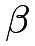 |
 |
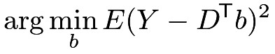 |
||
|
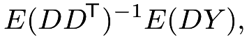 |
and then define the population residual as
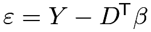
. By definition, decomposes into
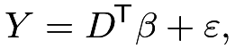 |
(105) |
which must satisfy
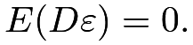 |
Based on
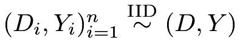
, the OLS estimator of is the moment estimator
is the moment estimator
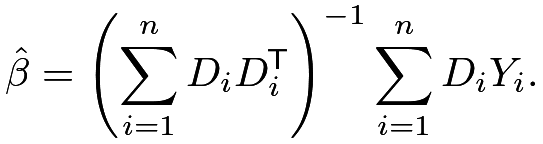 |
Because
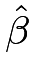 |
|
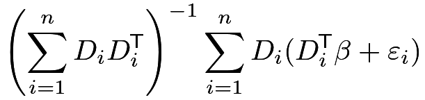 |
||
|
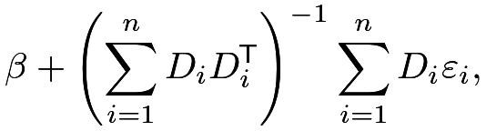 |
we can show that  is consistent for by the law of large numbers and the fact
is consistent for by the law of large numbers and the fact
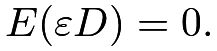
The classic EHW robust variance estimator for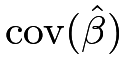
is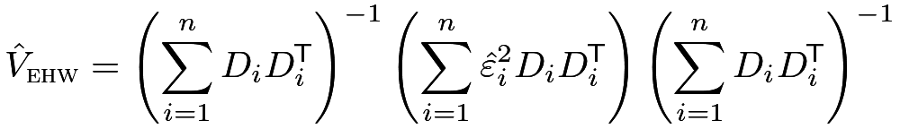 |
where
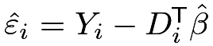
is the residual.The second view is to treat
| (106) |
as a true model for the data-generating process. That is, given the random variables
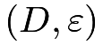
, we generate based on the linear equation (106).
Importantly, in the data-generating process,  and may be correlated with
and may be correlated with 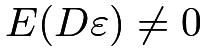
. Figure 35 gives such an example. This is the fundamental difference compared with the first view where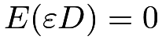
holds by the definition of the population OLS. Consequently, the OLS estimator can be inconsistent: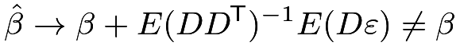 |
in probability, as the sample size  approaches infinity.
approaches infinity.
I end this section with definitions of endogenous and exogenous regressors based on (106), although their definitions are not unique in econometrics.
Definition 23.1
When 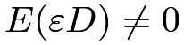 is called endogenous; when , the regressor is called exogenous.
The terminology in Definition 23.1 is standard in econometrics. When , we also say that we have endogeneity; when , we also say that we have exogeneity.
In the first view of OLS, the notions of endogeneity and exogeneity do not play any roles because by definition. Statisticians holding the first view usually find the notions of endogeneity and exogeneity strange, and consequently, find the idea of IV unnatural. To understand the econometric view of IV, we must switch to the second view of OLS.
. In the upper panel, represents unmeasured common causes of and .116 Linear Instrumental Variable Model
When is endogenous, the OLS estimator is inconsistent. We must use additional information to construct a consistent estimator for .
I will focus on the following linear IV model:
Definition 23.2 (linear IV model)
We have
 |
with
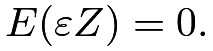 |
(107) |
The linear IV model in Definition 23.2 can be illustrated by the following causal graph:
The above linear IV model allows that but requires an alternative moment condition (107). With
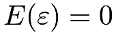
by incorporating the intercept, the new condition states that is uncorrelated with the error term . But any randomly generated noise is uncorrelated with , so an additional condition must hold to ensure that is useful for estimating . Intuitively, the additional condition requires that is correlated to , with more technical details stated below.
117 The Just-Identified Case
We first consider the case in which and have the same dimension and
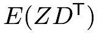
has full rank. The condition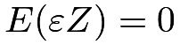
implies that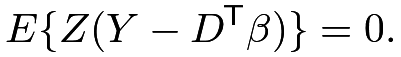 |
Solve the linear equations to obtain
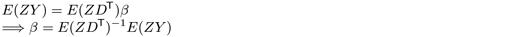 |
if is not degenerate.
The OLS is a special case if , i.e., acts as an IV for itself. The resulting moment estimator is
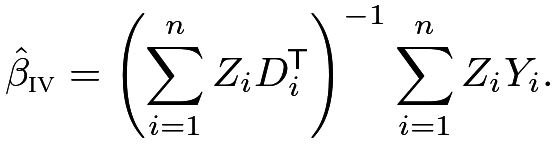 |
(108) |
It can be insightful to work out the details for the case with a scalar and . See Example 23.7 below.
Example 23.7
In the simple case with an intercept and scalar and , we have the model
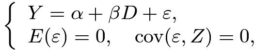 |
Under this model, we have
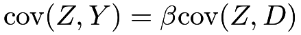 |
which implies
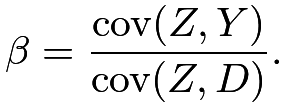 |
Standardize the numerator and denominator by 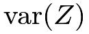
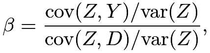 |
which equals the ratio between the coefficients of in the OLS fits of and on .
If is binary, these coefficients are differences in means (see Problem AE.2), and reduces to
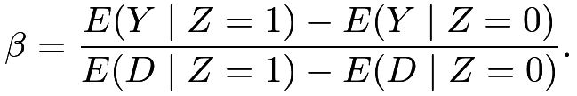 |
This is identical to the identification formula in Theorem 21.1. That is, with a binary IV and a binary treatment , the IV estimator recovers the CACE under the potential outcomes framework. This is a key result in Imbens and Angrist, (1994) and Angrist et al., (1996).
118 The Over-Identified Case
The discussion in Section 117 focuses on the just-identified case. When has a lower dimension than and does not have full column rank, the equation
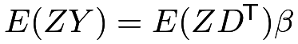
has infinitely many solutions. This is the under-identified case in which the coefficient cannot be uniquely determined even with . It is a challenging case beyond the scope of this book. To ensure identifiability, we need at least as many IVs as the endogenous regressors.
When has a higher dimension than and has full column rank, we have many ways to determine from . What is more, the sample analog
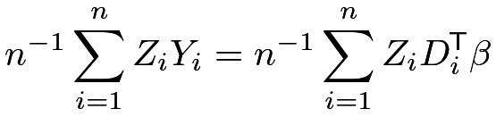 |
may not have any solution because the number of equations is larger than the number of unknown parameters.
A computational trick for the over-identified case is the two-stage least squares (TSLS) estimator (Theil,, 1953; Basmann,, 1957). It is a clever computational trick, which has two steps.
Definition 23.3 (Two-stage least squares)
Define the TSLS estimator of the coefficient of with being the IV as follows.
- 1.
Run OLS of
on , and obtain the fitted value 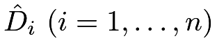
. If is a vector, then we need to run component-wise OLS to obtain
is a vector, then we need to run component-wise OLS to obtain 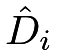
. Put the fitted vectors in a matrix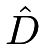
with rows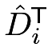
; - 2.
Run OLS of
on , and obtain the coefficient  .
.
To see why TSLS works, we need more algebra. Write it more explicitly as
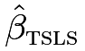 |
|
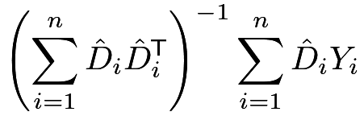 |
(109) | ||
|
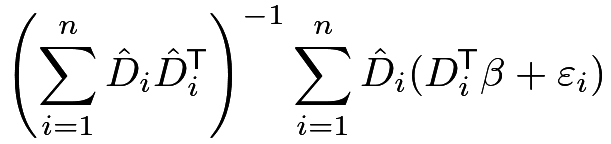 |
||||
|
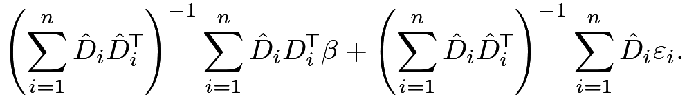 |
The first stage OLS fit ensures
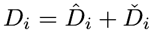
with orthogonal fitted values and residuals, that is,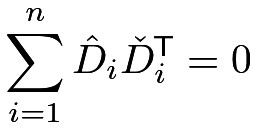 |
(110) |
is a zero square matrix with the same dimension as . The orthogonality (110) implies
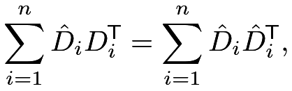 |
which further implies that
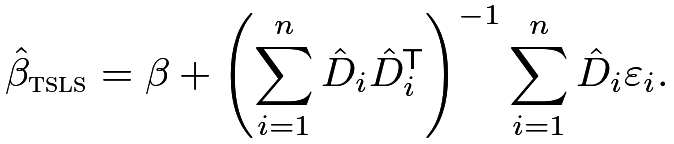 |
(111) |
The first stage OLS fit also ensures
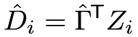 |
(112) |
which implies that
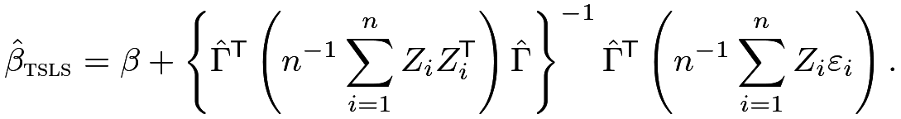 |
(113) |
Based on (113), we can see the consistency of the TSLS estimator by the law of large numbers and the fact that the term
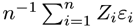
has probability limit . We can also use (113) to show that when and have the same dimension, is numerically identical to defined in Section 117, which is left as Problem 23.1.
Based on (111), we can obtain the standard error as follows. We first obtain the residual , and then obtain the robust variance estimator as
Importantly, the  ’s are
not the residual from the second stage OLS , so differs from the robust variance estimator from the second stage OLS.
’s are
not the residual from the second stage OLS , so differs from the robust variance estimator from the second stage OLS.
119 A Special Case: A Single IV for a Single Endogenous Treatment
This section focuses on a simple case with a single IV and a single endogenous treatment. It has wide applications. Consider the following structural equations:
where is a scalar endogenous regressor representing the treatment variable of interest (i.e., ),  is a scalar IV for (i.e., ), and
is a scalar IV for (i.e., ), and  contains other exogenous regressors (i.e., ). This is a special case with replaced by and replaced by
contains other exogenous regressors (i.e., ). This is a special case with replaced by and replaced by  .
.
119.1 Two-stage least squares
The TSLS estimator in Definition 23.3 simplifies to the following form.
Definition 23.4 (TSLS with a single endogenous regressor)
Based on (119), the TSLS estimator has the following two steps.
- 1.
Run OLS of
on , obtain the fitted values , and vectorize them as ; - 2.
Run OLS of
on , and obtain the coefficient , and in particular, , the coefficient of .
119.2 Indirect least squares
The structural equation (119) implies
 |
|
|||
|
Define , and . We have the following equations
which is called the reduced form, in contrast to the structural form in (119). The parameter of interest equals the ratio of two coefficients
In the reduced form, the left-hand side are dependent variables and , and the right-hand side are the exogenous variable and  satisfying
satisfying
More importantly, OLS gives consistent estimators for the coefficients in the reduced form (119.2).
The reduced form (119.2) suggests that the ratio of two OLS coefficients and is a reasonable estimator for  . This is called the indirect least squares (ILS) estimator:
. This is called the indirect least squares (ILS) estimator:
Interestingly, it is numerically identical to the TSLS estimator under (119).
Theorem 23.1
With a single endogenous treatment and a single IV in (119), we have
Theorem 23.1 is an algebraic fact.
Imbens, (2014, Section A.3) pointed it out without giving a proof.
I relegate its proof to Problem 23.2. The ratio formula makes it clear that the TSLS estimator has poor finite sample properties with a weak instrument variable, i.e.,  is close to zero.
is close to zero.
119.3 Weak IV
The following inferential procedure is simpler, more transparent, and more robust to weak IV. It is more computationally intensive though. The reduced form (119.2) also implies that
| (120) |
for any  .
At the true value , the coefficient of must be
.
At the true value , the coefficient of must be  . This simple fact suggests a confidence interval for by inverting tests for :
. This simple fact suggests a confidence interval for by inverting tests for :
where is the  -statistic for the coefficient of based on the OLS fit of (120) with the EHW standard error, and
-statistic for the coefficient of based on the OLS fit of (120) with the EHW standard error, and  is the
is the  upper quantile of the standard Normal random variable.
This confidence interval is more robust than the Wald-type confidence interval based on the TSLS estimator. It is similar to the FAR confidence set discussed in Chapter 21. This procedure makes the TSLS estimator unnecessary. What is more, we only need to run the OLS fit of based on the reduced form if the goal is to test under (119).
upper quantile of the standard Normal random variable.
This confidence interval is more robust than the Wald-type confidence interval based on the TSLS estimator. It is similar to the FAR confidence set discussed in Chapter 21. This procedure makes the TSLS estimator unnecessary. What is more, we only need to run the OLS fit of based on the reduced form if the goal is to test under (119).
120 Application
Revisit Example 23.5.
Card, (1993) used the National Longitudinal Survey of Young Men to estimate the causal effect of education on earnings. The data set contains 3010 men with ages between 14 and 24 in the year 1966, and Card, (1993) leveraged the geographic variation in college proximity as an IV for education. Here, is the indicator of growing up near a four-year college, measures the years of education, and the outcome is the log wage in the year 1976, ranging from 4.6 to 7.8. Additional covariates are race, age, and squared age, a categorical variable indicating living with both parents, single mom, or both parents, and variables summarizing the living areas in the past.
Based on TSLS, we can obtain the following the point estimator and  confidence interval.
confidence interval.
Using the strategy of the FAR confidence set, we can compute  -value as a function of .
-value as a function of .
Figure 36 shows the -values for a sequence of tests for the coefficient of based on following R code:
We report the point estimate as the value of with the largest -value as well as the confidence interval as the region of with -values larger than 0.05.
Comparing the TSLS and FAR methods, the lower confidence limits are very close but the upper confidence limits are slightly different due to the possibly heavy right tail of the distribution of the TSLS estimator. Overall, the TSLS and FAR methods give similar results in this example because the IV is not weak.
121 Homework
23.1 More algebra for TSLS in Section 118
23.2 Equivalence between TSLS and ILS
Prove Theorem 23.1.
Remark: Use the FWL theorem in Chapter 31.
23.3 Control function in the linear instrumental variable model
Definition 23.5 (control function)
Define the control function estimator as follows.
- 1.
Run OLS of
on , and obtain the residuals . If is a vector, then we need to run component-wise OLS to obtain . Put the residual vectors in a matrix with rows ; - 2.
Run OLS of
on and , and obtain the coefficient of , .
Show that .
Remark: To prove the result, you can use the results in Problems AE.4 and AE.5. In Definition 23.5, from Step 1 is called the control function for Step 2. Hausman, (1978) pointed out this result. Wooldridge, (2015) provided a more general discussion of the control function methods in more complex models.
23.4 Data analysis: Efron and Feldman, (1991)
Efron and Feldman, (1991) was one of the early studies dealing with noncompliance under the potential outcomes framework. The original randomized experiment, the Lipid Research Clinics Coronary Primary Prevention Trial (LRC-CPPT), was designed to evaluate the effect of the drug cholestyramine on cholesterol levels. In the dataset EF.csv, the first column contains the binary indicators for treatment and control, the second column contains the proportions of the nominal cholestyramine dose actually taken, and the last three columns are cholesterol levels. Note that the individuals did not know whether they were assigned to cholestyramine or to the placebo, but differences in adverse side effects could induce differences in compliance behavior by treatment status. All individuals were assigned the same nominal dose of the drug or placebo, for the same time period. Column 3, , was taken before communication about the benefits of a low-cholesterol diet, Column 4, was taken after this suggestion, but before the random assignment to cholestyramine or placebo, and Column 5, , an average of post-randomization cholesterol readings, averaged over two-month readings for a period of time averaging 7.3 years for all the individuals in the study. Efron and Feldman, (1991) used the change in cholesterol level as the final outcome of interest, defined as . Their original paper contains more detailed descriptions.
The data structure here is more complicated than the noncompliance problem discussed in Chapters 21 and 22. Jin and Rubin, (2008) re-analyzed the data based on the idea in Chapter 26 later. You can analyze the data based on your understanding of the problem, but you need to justify your choice of the method. There is no gold-standard solution for this problem.
23.5 Recommended reading
Imbens, (2014) gave an econometrician’s perspective of IV.